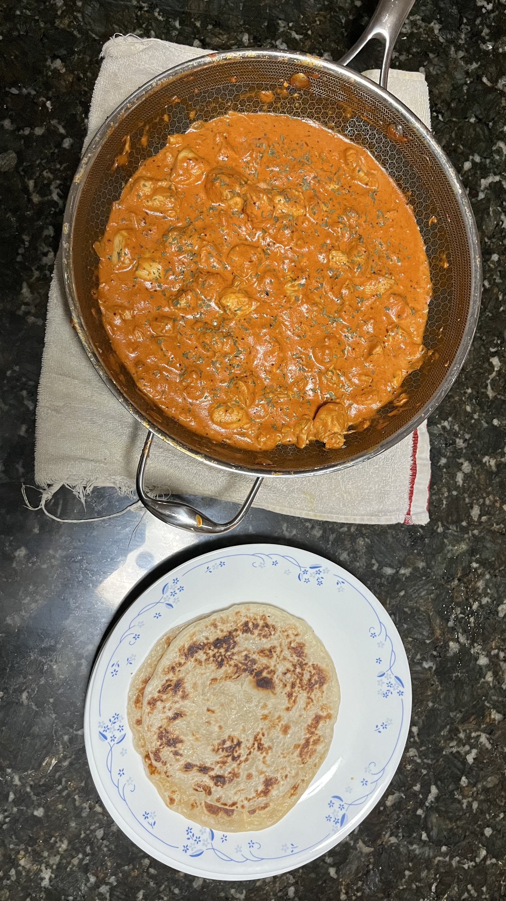
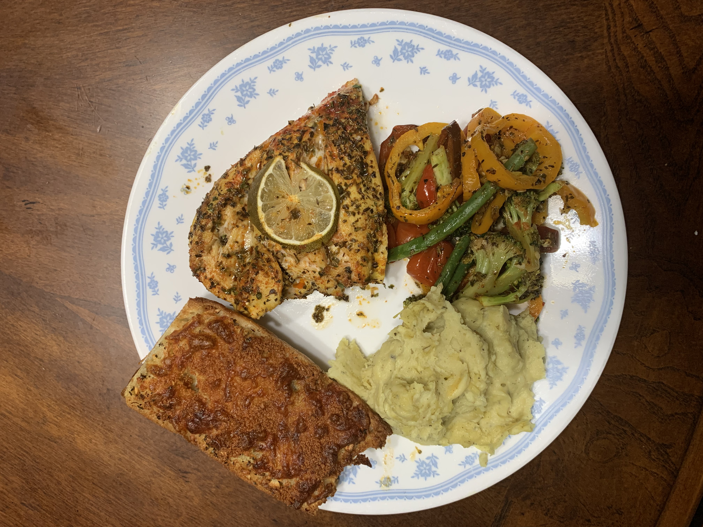

My Recipes
Soy-Glazed Salmon With Pickled Vegetables and Rice

A perfectly seared soy-glazed salmon with a perfectly cruchy exterior with a soft flaky interior. This is paired along side some pickled cucumbers and onions and freshly steamed rice with furikake on top.
Butter Chicken with Fresh Paratha
A creamy and flavorful curry made with tender, marinated chicken simmered in a rich tomato-based sauce, infused with aromatic spices. Served with freshly baked paratha, a soft and flaky flatbread that perfectly pairs with the indulgent chicken curry.
Shrimp and Mushroom Linguini with a Butter and Cream Sauce

A simple, yet elegant pasta dish that pairs seasoned shrimp with the umami flavor of mushrooms with a creamy and buttery lemon sauce.
Lemon Pepper Seasoned Salmon with Cheesy Garlic Bread, Mashed Potateos and Roasted Vegetables
A Beautful spread of different food including a lemon pepper seasoned baked salmon with a perfectly crunchy and chewy cheesy garlic bread, creamy chive based mashed potateos and baked vegetables seasoned by the drippings of the salmon.